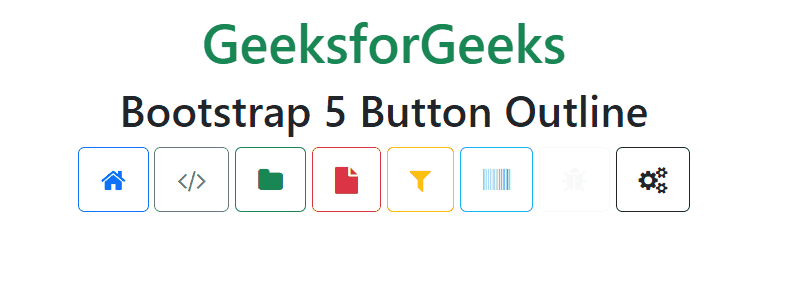

Кнопки в Bootstrap 5
Стили кнопок
Bootstrap 5 предоставляет различные стили кнопок:
Пример
<div class="container mt-3">
<h2>Button Styles</h2>
<button type="button" class="btn">Basic</button>
<button type="button" class="btn btn-primary">Primary<<button>
<button type="button" class="btn btn-secondary">Secondary</button>
<button type="button" class="btn btn-success">Success</button>
<button type="button" class="btn btn-info">Info</button>
<button type="button" class="btn btn-warning">Warning</button>
<button type="button" class="btn btn-danger">Danger</button>
<button type="button" class="btn btn-dark">Dark</button>
<button type="button" class="btn btn-light">Light</button>
<button type="button" class="btn btn-link">Link</button>
</div>
Button Styles
end.
Элементы кнопок
Стили кнопок Bootstrap 5 предназначены для использования с элементом <button>, но их также можно применять к элементам <input> и <a>.
Пример
<a class="btn btn-primary" href="#" role="button">Ссылка</a>
<button class="btn btn-primary" type="submit">Кнопка</button>
<input class="btn btn-primary" type="button" value="Ввод">
<input class="btn btn-primary" type="submit" value="Отправка">
Ссылка
end.
При использовании элемента <a> в качестве кнопки (например, запуска клиентского скрипта вместо перехода к другому адресу) указывайте role="button".
По возможности рекомендуется использовать элемент <button>, поскольку он обеспечивает наилучшую согласованность между браузерами.
Контурные кнопки
Используйте классы .btn-outline-* для применения семантического цвета только к контуру кнопки.
Пример
<button type="button" class="btn btn-outline-primary">Основная</button>
<button type="button" class="btn btn-outline-secondary">Вторичная</button>
<button type="button" class="btn btn-outline-info">Инфо</button>
<button type="button" class="btn btn-outline-success">Успех</button>
<button type="button" class="btn btn-outline-warning">Предупреждение</button>
<button type="button" class="btn btn-outline-danger">Опасность</button>
<button type="button" class="btn btn-outline-light">Светлая</button>
<button type="button" class="btn btn-outline-dark">Тёмная</button>
end.
Размер кнопки
Вы можете указать размер кнопки с помощью классов .btn-lg и .btn-sm. Вставьте их в дополнение к другим классам кнопок. Вот так:
Пример
<button type="button" class="btn btn-success btn-sm">Маленькая</button>
<button type="button" class="btn btn-success">По умолчанию</button>
<button type="button" class="btn btn-success btn-lg">Большая</button>
end.
Блочные кнопки
Кнопки Bootstrap 4 включали класс .btn-block для создания блочных кнопок, но он не вошёл в Bootstrap 5.
Блочные кнопка занимает всю ширину своего родителя. В Bootstrap 5 вы можете создать такую с помощью различных служебных классов. Вот пример:
Пример
<div class="d-grid gap-2">
<button class="btn btn-primary" type="button">Блочная кнопка</button>
</div>
end.
Отключенные кнопки
Bootstrap предлагает определённые стили для состояния disabled (а также для других состояний, например active).
Если вам нужно отключить кнопку, использующую элемент <a>, вы можете указать класс .disabled. Вам не нужно делать это с кнопками, которые используют элементы <button> и <input>. Чтобы отключить эти кнопки, используйте стандартный HTML-атрибут disabled.
Вот пример отключения кнопок разных типов:
Пример
<p><a href="#" class="btn btn-primary btn-lg disabled" role="button">Элемент «a»</a></p>
<p><button type="button" class="btn btn-lg btn-primary" disabled="disabled">Элемент «button»</button></p>
<p><input type="button" class="btn btn-lg btn-primary" disabled="disabled" value="Элемент «input»"></p>
<
end.